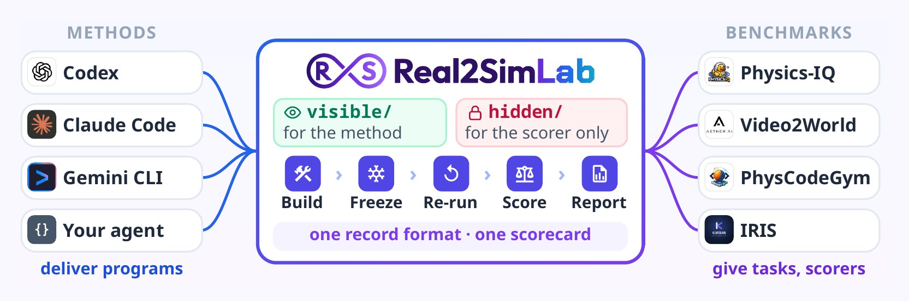
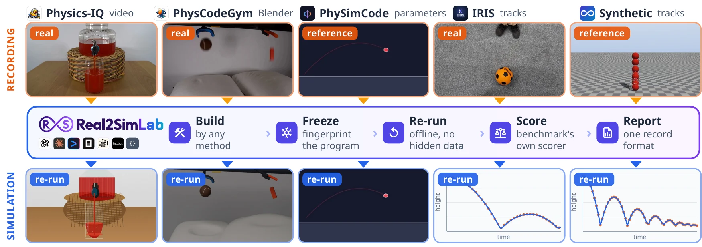
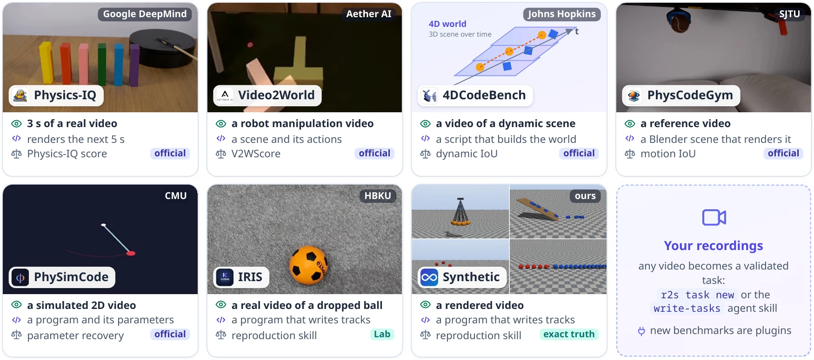
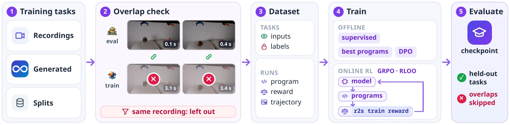

A Unified Platform for Real-to-Simulation Transfer
- Unified platform47 coding agents, your own pipelines and hand-written programs, on six benchmarks.
- Fair comparisonThe same sandbox for every method, a frozen program, and an offline re-run without the hidden data.
- One command
r2s run example.tomlgives one scorecard.

Why a shared platform
Benchmarks differ in their inputs, deliverables and scorers, so N methods on M benchmarks take N × M integrations. With Real2SimLab, each connects once: N + M.

Scroll sideways to see the whole figure.
A fair comparison, in five steps
- BuildA method writes its program in a sandbox.
- FreezeThe program is copied and fingerprinted.
- Re-runIt runs again offline, without the hidden data.
- ScoreThe benchmark's own scorer, or the reproduction skill for raw datasets.
- ReportOne scorecard for every benchmark.
A failure of the machine is redone, never counted as a score.
![Architecture of Real2SimLab. Left: any method, such as coding agents, real-to-simulation pipelines, hand-written programs, learned methods and reference baselines, through a method adapter. Right: any benchmark, Physics-IQ, Video2World, 4DCodeBench, PhysCodeGym, PhySimCode, IRIS, Synthetic and your recordings, through a benchmark adapter. Center: one task format with visible and hidden parts; build, freeze, re-run, score and report; sandboxed build and frozen re-run; delivery conventions; scoring protocols; training; one record format and one scorecard.](../assets/img/figures/architecture.webp)
Scroll sideways to see the whole figure.
Recordings and re-runs

Six benchmarks, many coding agents
Each benchmark keeps its own tasks and scorer. Every method, from coding agents to your own pipeline, runs on all of them in the same way.

Scroll sideways to see the whole figure.
Training data from the same tasks
Real2SimLab provides training tasks, datasets that leave out every recording of an evaluation task, and rewards computed by the evaluation's own code. It ships no trainer and no weights.

Scroll sideways to see the whole figure.
Get started
git clone https://github.com/Real2SimHub/Real2SimLab.git && cd Real2SimLab pip install -e . # Python 3.11+ and ffmpeg r2s demo --open # about 30 s on a CPU
Next: Real2SimLab on GitHub.
BibTeX
If you use either project, please cite our paper:
@article{real2simlab2026,
title = {Real2SimLab: A Unified Platform for Real-to-Simulation Transfer},
author = {Zhang, Yongchang and Huang, Jie and Ni, Yunhe and Zhou, Ningyu and Zhao, Guangyu and Liu, Ruixun and Huang, Rui and Wu, Yidi and Zhang, TianZe and Jiang, Zixiang and Li, Xiang and Shen, Kevin and Zhong, Yiwu},
journal = {arXiv preprint arXiv:2611.34849},
year = {2026}
}